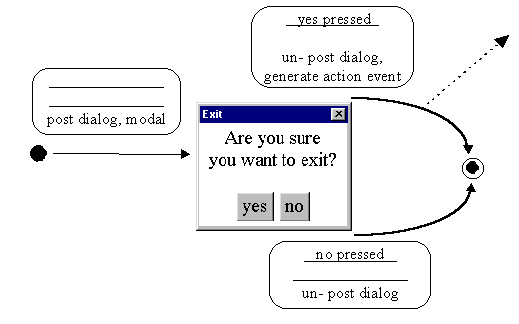

The exitDialog used by the MenuBarTuttle class, attached to the File menu Exit … item, is an instance of the ExitDialog class whose appearance and behaviour is shown in Figure 6.7.

Figure 6.7 The ExitDialog appearance and behavior.
The dialog is posted in a modal manner, in response to the user pressing the Exit … item on the File menu. It is appropriate for this dialog to be presented to the user in a modal manner as the possibility of an application terminating is sufficiently important for the user to be forced to attend to it. Once posted pressing either of the buttons will un-post the dialog causing a transition to the STD's terminal state. If the yes button is pressed this transition will generate an action event, allowing the MenuBarTuttle class to be informed that the user indicated that the application should be shut down.
The dialog is constructed with a MessageCanvas instance, as described in Chapter 3, containing a two line message mounted in its "Center" location and a Panel containing the two Buttons in its "South" location. The ExitDialog instance attribute declarations and constructor are as follows.
0018 class ExitDialog extends Dialog
0019 implements ActionListener {
0020
0021 private Window itsParentWindow;
0022 private ActionListener itsListener;
0023
0024 private Panel buttonPanel;
0025 private MessageCanvas message;
0026 private Button yesButton;
0027 private Button noButton;
0028
0029 protected ExitDialog( Frame itsParentFrame,
0030 ActionListener listener) {
0031
0032 super( itsParentFrame, "Exit", true);
0033 this.setFont( itsParentFrame.getFont());
0034 this.setBackground( itsParentFrame.getBackground());
0035 itsParentWindow = (Window) itsParentFrame;
0036 itsListener = listener;
0037
0038 message = new MessageCanvas( "Are you sure\nyou want to exit?");
0039 message.setBackground( Color.white);
0040
0041 buttonPanel = new Panel();
0042 buttonPanel.setBackground( Color.white);
0043
0044 yesButton = new Button( "yes");
0045 yesButton.setActionCommand("yes");
0046 yesButton.addActionListener( this);
0047 buttonPanel.add( yesButton);
0048
0049 noButton = new Button( "no");
0050 noButton.setActionCommand("no");
0051 noButton.addActionListener( this);
0052 buttonPanel.add( noButton);
0053
0054 this.add( message, "Center");
0055 this.add( buttonPanel, "South");
0056 this.pack();
0057 } // End ExitDialog constructor.
The constructor commences, on line 0032, by calling its parent (super) constructor, specifying as the first argument the Frame instance which this dialog window is to be associated with. This argument is received as the first argument of the ExitDialog constructor. The remaining two arguments of the Frame constructor call are the title to be used for the dialog window and the modal state (true) of the dialog. The constructor continues, on lines 0033 and 0034, by configuring the appearance of the dialog and, on lines 0035 and 0036, storing the identities of the arguments to the constructor in instance attributes.
Lines 0038 to 0056 then construct, configure and assemble the components of the dialog: a MessageCanvas instance in its "Center" location and a Panel containing two buttons in the "South" location, producing the appearance shown in Figure 6.7. The ActionListener of both buttons is specified as the ExitDialog instance itself, which accordingly declares itself to implement the ActionListener interface. The constructor creates the dialog ready for use but it does not become visible to the user until its setVisible() method, implemented as follows, is called with a true argument.
0063 protected void setVisible( boolean showIt) {
0064
0065 Point itsParentsLocation;
0066 Dimension itsParentsSize;
0067 Point itsLocation;
0068 Dimension itsSize;
0069
0070 if ( showit) {
0071 itsParentsLocation = itsParentWindow.getLocationOnScreen();
0072 itsParentsSize = itsParentWindow.getSize();
0073 itsSize = this.getSize();
0074 itsLocation = new Point();
0075
0076 itsLocation.x = itsParentsLocation.x +
0077 itsParentsSize.width/2 -
0078 itsSize.width/2;
0079 itsLocation.y = itsParentsLocation.y +
0080 itsParentsSize.height/2 -
0081 itsSize.height/2;
0082 this.setLocation( itsLocation);
0083 } // End if.
0084 super.setVisible( showIt);
0085 } // End show.
The boolean showIt argument indicates if the dialog should be made visible to the user or hidden from them. This method only need be concerned with intervening when the dialog is to be shown and the if structure between lines 0070 to 0083 effects this. The contents of this decision are identical with a part of the implementation of the PostItNote setVisible() method in Chapter 3, and ensures that the dialog is always presented to the user centered within its parent, MenuBarTuttle, window. Following the if structure, on line 0084, the parent, Dialog, setVisible() method is indirected to passing onward the showIt argument to actually make the dialog visible, or hide it if showIt is false.
The only other method of the ExitDialog class is the actionPerformed() method, as follows.
0085 public void actionPerformed( ActionEvent event) {
0086 this.setVisible( false);
0087 if ( event.getActionCommand().equals( "yes")) {
0088 itsListener.actionPerformed( new ActionEvent( this,
0089 ActionEvent.ACTION_PERFORMED,
0090 "exit please"));
0091 } // End if.
0092 } // End actionPerformed.
0093 } // End ExitDialog.
This method can only be called in response to a press of either of the buttons on the ExitDialog and commences by calling the ExitDialog's setVisible() method, with the argument false, to un-post it from the desktop. If this method was called as a consequence of the "yes" button being pressed the user has confirmed that the applet should terminate. This results, on lines 0088 to 0090, in the actionPerformed() method of the ActionListener passed to the constructor being called with an ActionEvent argument containing the commandString "exit please".
The MenuBarTuttle constructs its exitDialog instance at the end of its init() method as follows.
0065 exitDialog = new ExitDialog( tuttleFrame, this);
Hence the identity of the ActionListener to which the ActionEvent is dispatched when the "yes" button is pressed is the MenuBarTuttle instance, whose processing of "exit" commands within its performAction() method, given in detail above, is as follows.
0083 if ( theCommand.equals( "exit")) {
0084 if ( theArgument.equals( "show")) {
0085 exitDialog.setVisible( true);
0086 } else if ( theArgument.equals( "please")) {
0087 System.exit( 0);
0088 } // End if.
The Exit … button on the File menu of the interface will send the commandString "exit show" to this method and this will result, in line 0085, in the exitDialog setVisible() method being called, with the argument true, making the dialog visible to the user in the middle of the applet's window. If the user confirms that the applet should terminate this method will be called again with the commandString "exit please", resulting in the System.exit() call, on line 0087, terminating the applet. The argument 0 to the exit() method call indicating that the application concluded normally.
A common novice's design error would be to call the System.exit() method within the ExitDialog's implementation. With this approach the applet is not made aware that the user has confirmed that the applet should conclude before it terminates and so has no opportunity to tidy up, for example closing any open streams, before the applet finishes.
Design Advice
Only the applet, or application, class should be responsible for finishing and should conclude gracefully closing any streams and releasing any other resources as required.
As the applet stands at the moment the application can also be immediately terminated by using the appletviewer's window frame exit control. In the Windows '95 illustrations used in this book this is the X button at the top right. To prevent this from happening, or cause it to happen in some environments, the WindowEvents dispatched to the Frame will have to be intercepted and handled. To accomplish this, the declaration of the MenuBarTuttle class will have to be amended to indicate that it implements the WindowListener interface, as follows.
0022 public class MenuBarTuttle extends Applet
0023 implements ActionListener,
0024 WindowListener {
The tuttleFrame will have to be informed of the identity of its WindowListener object by calling its addWindowListener() method, as follows.
0047 tuttleFrame.addWindowListener( this);
Having done this the MenuBarTuttle class will have to supply the seven methods required by the WindowListener interface of which only one, the windowClosing(), method need actually do anything. The implementation of these method is as follows.
0168 public void windowClosing( WindowEvent event) {
0169 exitDialog.setVisible( true);
0170 } // End windowClosing .
0171
0172 public void windowOpened( WindowEvent event) {} // End windowOpened.
0173 public void windowClosed( WindowEvent event) {} // End windowClosed.
0174 public void windowIconified( WindowEvent event) {} // End windowIconified.
0175 public void windowDeiconified(WindowEvent event) {} // End windowDeiconified.
0176 public void windowActivated( WindowEvent event) {} // End windowActivated.
0177 public void windowDeactivated( WindowEvent event) {} // End windowDeactivated.
The windowClosing() method calls the exitDialog setVisible() method to post the dialog onto the desktop and as it does not dispatch to its super windowClosing() method prevents the window from actually closing. The remaining six methods are dummy methods which do nothing, but have to be supplied in order to satisfy the WindowListener interface, and have been laid out in a manner which emphasizes this to anyone reading the code. The consequence of these changes is that when the exit control on the Frame is pressed the exitDialog will be posted and only if the user confirms the exit by pressing the "yes" button will the applet actually terminate.
In this implementation the only instance attributes which strictly require visibility outside the scope of the constructor are itsParentWindow, required by the setVisible() method, and itsListener, required by the actionPerformed() method. However Java has a rule that when a constructor calls its parent (super) constructor, this call has to be the very first statement in the constructor. This rule prevents the remaining instance declarations, on lines 0024 to 0027, from being declared as local variables of the constructor. A more elegant solution would be to include an additional private constructDialog() method within the class, declaring the components as local variables, and calling the method from the constructor; but in a class a simple as this declaring them as private instance attributes seems acceptable.